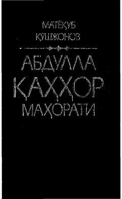

АҚAbdulla Qahhor ijodining badiiy-g‘oyaviy xususiyatlari va so‘z san'atiga bag‘ishlangan ilmiy monografiya.
Ushbu monografiya taniqli adabiyotshunos olim Matyoqub Qo‘shjonov tomonidan yozilgan bo‘lib, o‘zbek adabiyotining klassigi Abdulla Qahhor hikoyalari va dramalarining badiiy-g‘oyaviy tahliliga bag‘ishlangan. Kitobda adib ijodiga xos so‘z qo‘llash mahorati, hayot nafasini aks ettirish xususiyatlari va obrazlar tizimi chuqur ochib berilgan. Asar adabiyotshunoslar, talabalar va keng kitobxonlar ommasiga mo‘ljallangan.